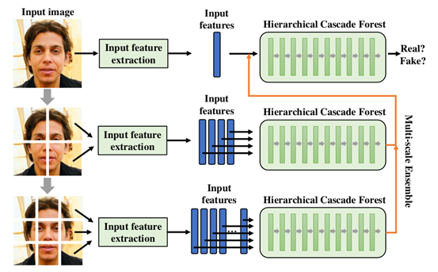

Forensics Forest: Multi-scale Hierarchical Cascade Forest for Detecting GAN-generated Faces
简介：现有的GAN生成人脸检测方法通常基于CNN模型，CNN模型除了其强大的学习性能外，具有一定的局限性，主要表现为两个方面： 1) 需要强大的计算资源； 2) 由于对抗样本的出现，CNN的安全问题逐渐暴露。因此本文提出了一种基于多尺度分层级联深度森林的GAN生成人脸检测方法，与CNN模型相比，该方法计算简单，且森林模型不可微的性质保证了其安全性。 该方法通过特征提取处理任意大小的输入图像，克服了GAN生成人脸尺寸大不易处理的困难，并且通过分层级联森林迭代的处理输入特征，加强了不同输入特征之间的联系。 此外，该方法通过多尺度集成考虑不同尺度的信息，使其分类结果更为准确。实验表明了该方法在检测GAN生成人脸方面的有效性。
本文第一作者为2021级硕士陆久翠，指导老师李岳尊。

作者: Jiucui Lu, Yuezun Li#, Jiaran Zhou, Bin Li, Siwei Lyu.
会议名称: IEEE International Conference on Multimedia and Expo (ICME). CCF B.
© AI Security Group (AISec) @ OUC